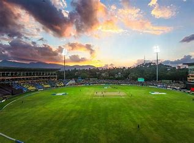

Introduction to Cricket
Cricket is a bat-and-ball game played between two teams of eleven players on a field at the center of which is a 22-yard pitch with a wicket at each end, each comprising two bails balanced on three stumps. The game is played by millions of people worldwide, making it one of the most popular sports.
The objective of the game is to score runs by hitting the ball with a bat and running between the wickets, while the opposing team tries to dismiss the batsmen and limit the number of runs scored. Cricket matches are typically played over several hours or days, with various formats such as Test cricket, One Day Internationals (ODIs), and Twenty20 (T20) cricket.

Cricket has a rich history dating back to the 16th century and has evolved into a global sport with a diverse fan base. It is known for its unique terminology, traditions, and strategies, as well as its ability to bring people together from different cultures and backgrounds.
Key Elements of Cricket
- Batting: The act of hitting the ball with the bat to score runs.
- Bowling: The act of delivering the ball to the batsman.
- Fielding: The act of preventing the batsmen from scoring runs and getting them out.
- Wicket: The structure consisting of three stumps and two bails, which the bowler aims to hit to get a batsman out.
- Runs: Points scored by the batsmen by running between the wickets.
Types of Cricket Matches

Cricket matches are played in various formats, each with its own rules and duration:
- Test Cricket: The longest format of the game, played over five days with each team batting twice.
- One Day Internationals (ODIs): Limited-overs matches typically played over 50 overs per side.
- Twenty20 (T20) Cricket: The shortest format of the game, with each team batting for a maximum of 20 overs.
Team colours
India plays its test cricket matches with the traditional cricket whites with the caps and helmets being navy blue, while the uniforms worn in limited-overs matches have different shades of blue for ODIs and T20s, which sometimes has a splash of the colours which are present in the Indian flag.[84] India's cricket kit during the World Championship of Cricket. During the 1992 and 1999 Cricket World Cups, the Indian team's kit was sponsored by ISC and ASICS respectively,[85][86] but had been without an official kit sponsor till 2001. With no official kit sponsor for the Indian team, Omtex manufactured the shirts and pants for the team, while some players chose to wear pants provided to them by their individual sponsors like Adidas and Reebok till December 2005. In December 2005, Nike outbid its competitors Adidas and Reebok, and acquired the contract for 5 years which started in January 2006 ahead of Indian team's tour to Pakistan.[87] Nike was a long time kit supplier to team India with two extensions for a period of five years each time; in 2011[88] and 2016[89] respectively. After Nike ended its contract in September 2020,[90] MPL Sports Apparel & Accessories, a subsidiary of online gaming platform Mobile Premier League replaced Nike as the kit manufacturer in November 2020 ahead of Indian team's tour to Australia, which was supposed to run until December 2023.[91][92] In November 2022, MPL Sports decided to exit the deal before the end of their contract and hand over their rights to Kewal Kiran Clothing Limited (KKCL).[93] In January 2023, MPL appointed Kewal Kiran Clothing Limited (KKCL) and Killer Jeans (a brand owned by KKCL) as interim sponsors till May 2023.[94][95] In February 2023, it was announced that Adidas will begin a five-year sponsorship deal in June 2023 ahead of ICC World Test Championship final, replacing KKCL.[96] In May 2023, BCCI officially announced Adidas as their kit sponsor for the next five years running until March 2028.[97][98][99]